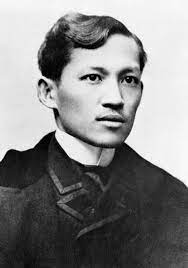

José Protacio Rizal Mercado y Alonso Realonda(1861-1896)
A national Hero of the Philippines and the First Asian Nationalist.
12 Facts you need to know about Philippines National Hero:
FULL NAME
His full name is José Protasio Rizal Mercado y Alonso Realonda. He was a patriot, physician, poet par excellence and novelist who inspired the Philippine nationalist movement. He died at age 35, executed by Spanish colonial masters, who ruled the Philippines for 350 years.
BIRTHPLACE
Rizal was born on June 19, 1861 in Calamba town, Laguna province, 54 km south of Manila, to Francisco Engracio Rizal Mercado y Alejandro and Teodora Morales Alonzo Realonda de Rizal y Quintos.
STUDENT
The son of a well-to-do landowner, Rizal was a brilliant student. He initially studied medicine in Manila. At the age of 21, he traveled to Spain to complete his medical degree at the Universidad Central de Madrid, where he was conferred the degree of Licentiate in Medicine. He went to Paris and Germany to specialise in ophthalmology, in part because he wanted to cure his mother’s failing eyesight.
POLYMATH
- In Germany, he worked at the University Eye Hospital under Dr. Otto Becker. During his stay in Europe between 1882 and 1892, he wrote several poems and two novels.
- A polyglot, he learnt several languages — Arabic, Hebrew, Filipino, Ilokano, Bisayan, Subanon, Chinese, Latin, Spanish, Greek, English, French, German, Malay, Sanskrit, Dutch, Japanese, Catalan, Italian, Portuguese, Swedish and Russian — according to historians.
- While in Europe, Rizal wrote two novels, which the Spanish colonial government found subversive. His novels had been turned into a number of period movies.
EUROPEAN EDUCATION
- While in Europe, Rizal committed himself to the reform of Spanish rule in his home country, through peaceful means. He was a passionate writer and published his first novel Noli Me Tangere (Touch me Not/The Social Cancer, 1887), in Berlin. Noli highlighted the evils of Spanish rule in his homeland.
- A sequel, El Filibusterismo (1891; The Filibuster/The Reign of Greed), established his reputation as the leading spokesman of the Philippine reform movement. He also published an annotated edition (1890) of Antonio Morga’s Sucesos de las Islas Filipinas, hoping to show that the native people of the Philippines had a long history before the coming of the Spaniards.
AGENDA
- Rizal’s political reform programme included integration of the Philippines as a province of Spain, representation in the Cortes (the Spanish parliament), the replacement of Spanish friars by Filipino priests, freedom of assembly and expression, and equality of Filipinos and Spaniards before the law.
- In 1895, Rizal sought permission to travel to Cuba as an army doctor. His request was approved, but a year later, in August 1896, the revolt lead by the Katipunan, a nationalist Filipino society, erupted. Its leader, Andres Bonifacio, took inspiration from the French. Rizal was implicated and jailed. After a show trial, Rizal was convicted of sedition and sentenced to death.
EXECUTION
- Though José Rizal called for peaceful reform of Spain's colonial rule in the Philippines and abhorred violence in his writings, a colonial court sentenced him to death by musketry. At age 35, Rizal was executed on December 30, 1896 in Bagumbayan (now Rizal Park in Luneta, Manila).
- After the execution, Rizal fired up the Philippine nationalist movement. Filipino revolutionary forces under General Emilio Aguinaldo (first president) declared independence on June 12, 1898.
RIZAL MONUMENTS
- Today, Rizal is one of the most revered of Filipino heroes. His monuments are found in different parts of the world: in Germany, Japan, Spain, Australia, Austria, China (Hong Kong, Fujian), Canada, Czech Republic, France, Italy, Japan, UK, US (California, Hawaii, Texas, Illinois, Washington).
- The late Philippine President Benigno S. Aquino III is seen delivering his message during the unveiling of the five- meter bronze statue of Dr. Jose P. Rizalat the Rizal Park, Rosemeadow, City of Campbelltown, Australia on October 26, 2012.
NATIONAL ICON
- Rizal’s main monument today stands in Luneta, the main execution spot of Spanish colonial masters enriched by the blood of Filipino martyrs. The Americans, who succeeded Spain in colonising the Philippines (50 years), emphasised Rizal's views on Filipino nationalism rather than those of the more action-oriented Emilio Aguinaldo and Andrés Bonifacio.
- At the turn of the 20th century, however, some in the US media portrayed the people of the Philippines as “pirates”, “barbarians”, “savages”, “incapable of civilisation”.
- It was the story and poetry of Rizal that "did something to the House (of US Congress) akin to a miracle,” according to Rep. Henry R. Cooper, author of the Philippine Bill of 1902 — also known as the Cooper Act.
This organic act about the Philippines provided for the following:
- Extension of the Bill of Rights to Filipinos;
- Establishment of an elective Philippine Assembly, after the proclamation of peace and two years after the publication of the Philippine census;
- Appointment of two resident commissioners to represent the Filipino people in Washington;
- Retention of the Philippine Commission as the upper house of the legislature, with the Philippine Assembly as the lower house; and
- Conservation of the natural resources of the Philippines for the Filipinos”.
POETRY
- My Last Farewel is Rizal’s 14-verse valedictory written shortly before he was put to death. It expresses love, unfathomable grief and shows a man with unwavering convictions. His words honoured his homeland (“our Eden lost”), the lost culture of pre-Hispanic Philippines, his parents and friends and points to the injustices he had witnessed at the hands of colonial masters:
“Farewell, dear Fatherland, clime of the sun caressed Pearl of the Orient seas, our Eden lost!
“Gladly now I go to give you this faded life’s best. And were it brighter, fresher, or more blessed, Still would I give it thee, nor count the cost.”
“I die without seeing the dawn brighten over my native land... You who have it to see, welcome it — and forget not those who have fallen during the night.”
“And if colour is lacking my blood you shall take, poured out at need for thy dear sake. To dye with its crimson the waking ray.”
“My dreams, when life first opened to me, My dreams, when the hopes of youth beat high, Were to see thy loved face, O gem of the Orient sea, from gloom and grief, from care and sorrow free; No blush on thy brow, no tear in thine eye.”
“Dream of my life, my living and burning desire, All hail! cries the soul that is now to take flight; All hail! And sweet it is for thee to expire; To die for your sake, that you may aspire; And sleep in thy bosom eternity’s long night.”
"If over my grave some day you see grow, In the grassy sod, a humble flower, Draw it to thy lips and kiss my soul so, While I may feel on my brow in the cold tomb below, the touch of thy tenderness, thy breath’s warm power.”
“Let the moon beam over me soft and serene, Let the dawn shed over me its radiant flashes, Let the wind with sad lament over me keen; And if on my cross a bird should be seen, Let it trill there its hymn of peace to my ashes.”
“Let the moon beam over me soft and serene, Let the dawn shed over me its radiant flashes, Let the wind with sad lament over me keen; And if on my cross a bird should be seen, Let it trill there its hymn of peace to my ashes.”
“Let the sun draw the vapors up to the sky, And heavenward in purity bear my tardy protest Let some kind soul over my untimely fate sigh, And in the still evening a prayer be lifted on high; From thee, O my country, that in God I may rest.”
“Pray for all those that hapless have died, For all who have suffered the unmeasur'd pain; For our mothers that bitterly their woes have cried, For widows and orphans, for captives by torture tried. And then for thyself that redemption thou mayst gain.”
“And when the dark night wraps the graveyard around, With only the dead in their vigil to see, Break not my repose or the mystery profound, And perchance you may hear a sad hymn resound It is I, O my country, raising a song unto thee.”
“And even my grave is remembered no more, Unmarkedd by never a cross nor a stone, Let the plow sweep through it, the spade turn it over,. That my ashes may carpet earthly floor, Before into nothingness at last they are blown. Then will oblivion bring to me no care, As over your vales and plains I sweep; Throbbing and cleansed in you space and air, With colour and light, with song and lament I fare; Ever repeating the faith that I keep.”
“My Fatherland adored, that sadness to my sorrow lends, Beloved Filipinas, hear now my last goodbye! I give you all: parents and kindred and friends. I go where there are no slaves, hangmen or oppressors; where faith does not kill; where the one who reigns is God.”
“Farewell to you all, from my soul torn away, Friends of my childhood in the home dispossessed! Give thanks that I rest from the wearisome day! Farewell to thee, too, sweet friend that lightened my way; Beloved creatures all, farewell!”
~"Mi Ultimo Adios". Poem by José Rizal, translated by Charles Derbyshire (1897).KILOMETRE 0
- The remains of Rizal, after exhumation on August 17, 1898, were kept in the Rizal family house in Binondo until they were brought to their final resting place in Luneta. On December 30, 1912, a solemn ceremony was held to finally bury the remains in the base of the monument dedicated in memory of Rizal. The Philippines' main Kilometre 0 is found in Luneta, across the Rizal statue.
- An Italian sculptor Carlo Nicoli of Carrara, Italy, won a design contest for the Rizal memorial. Nicoli’s scaled plaster model was titled Al Mártir de Bagumbayan (To the Martyr of Bagumbayan), besting 40 other accepted entries. Nicoli won the ₱5,000 prize for this design.
BRP RIZAL FRIGATE
The remains of Rizal, after exhumation on August 17, 1898, were kept in the Rizal family house in Binondo until they were brought to their final resting place in Luneta. On December 30, 1912, a solemn ceremony was held to finally bury the remains in the base of the monument dedicated in memory of Rizal. The Philippines' main Kilometre 0 is found in Luneta, across the Rizal statue.
For more information, checkout
Dr.José Rizal
on Wikipedia.
[
Developed by @
Dexter Bantula.
]